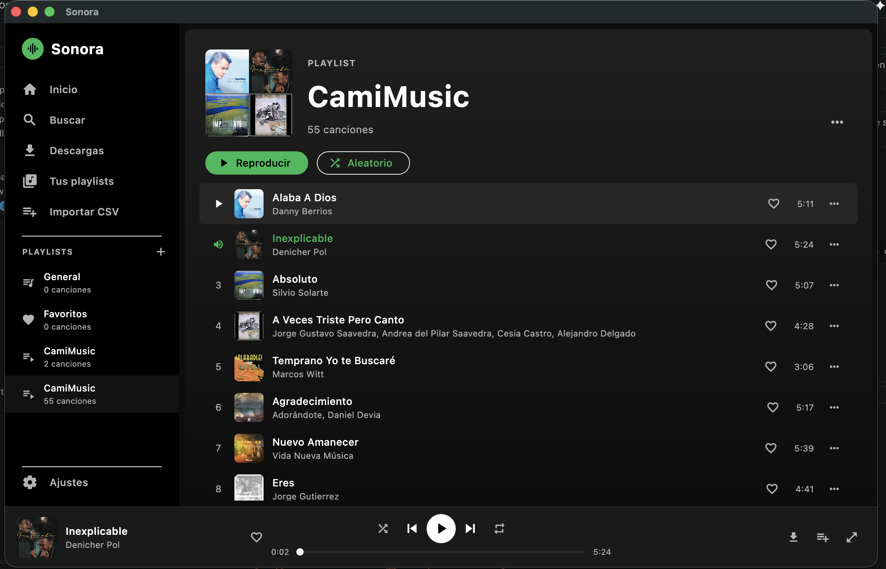

Your music,
on the desktop.
Search, listen and download from YouTube Music, and import your Spotify playlists — no login, no API.
 Linux
Free & open source
Linux
Free & open source

Everything you need to listen
Built with Flutter and libmpv for native, rock-solid desktop audio.
Native playback
Plays local files, YouTube streaming and radio-style queues with shuffle and gapless control via media_kit / libmpv.
YouTube Music search
Search the full catalog through InnerTube with automatic fallback, and stream instantly.
Download for offline
Concurrency-limited download queue with progress, plus automatic disk caching as you listen.
Spotify import
Import playlists, albums or songs with no API and no login — even editorial/algorithmic playlists the API blocks.
CSV import
Bring your library in from Exportify or TuneMyMusic CSV exports in seconds.
Playlists & favorites
Create and manage playlists with Spotify-style mosaic covers, favorites and recently played.
Resume anywhere
Remembers playback position and recovers your session after a restart or crash.
Radio mode
Auto-extends your queue with related tracks from a single song — no AI required.
Cross-platform
One app for macOS, Windows and Linux, with native window management and a sleek dark UI.
Download
Grab the latest version for your operating system.
After installing on macOS
The app isn't code-signed yet, so macOS quarantines it. After dragging Sonora into Applications, run this in Terminal so it opens:
xattr -dr com.apple.quarantine /Applications/Sonora.appAlternatively: right-click the app → Open → Open. On Windows, if SmartScreen appears: More info → Run anyway.
On Linux, the .deb adds Sonora to your applications menu (sudo apt install ./Sonora-linux-amd64.deb). The .AppImage is portable — chmod +x and run it. Requires x86_64 and glibc ≥ 2.35. See the README for every platform.